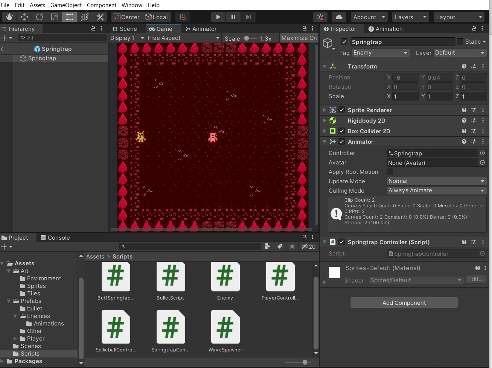

Adding an Enemy Part 2: Finishing the Animation and Script
In Part 1, we started working on our first enemy, Springtrap.
We have created the animations that the Animator Controller will use for Springtrap. Now we need to tell the Animator Controller when to play each animation.
Building the Animator Controller
Open the Springtrap Animator Controller that we created previously (Assets > Prefabs > Enemies > Animations) in the Animator window. In addition to the Any State, Entry, and Exit blocks, we should see two other blocks for the walking and death animations we created last time.

Walking Animation
By default, the Animation State Machine (the graph) has the walking animation linked to Entry. This means that the walking animation will play when the game starts, which is what we want.
(If the walking animation is not linked to Entryby default, right-click the walking animation and select Set as Layer Default State.)
Death Animation
We also want Springtrap's death animation to play when he dies.
We do this by adding a transition between the walking animation and the death animation, then assigning a trigger to the transition.
First, right-click the walking animation and select Make Transition.

A white arrow that follows your cursor should appear. Click on the death animation to link the two animations together.

Click the drop-down next to the plus sign in the parameters tab. Select Trigger. Name this trigger “Die.”
Now click on the arrow for the death transition and look at it in the Inspector tab.

In the Conditions section, click the plus sign under the words List is Empty to add the Die trigger to the death transition. Also, make sure to uncheck Has Exit Time because we want the death animation to play immediately when Springtrap dies.
Setting the animation trigger in the Enemy script
Now we need to set this trigger in our enemy script.
Open the Enemy.cs script we wrote in Part 1 (Assets > Scripts).
This is what you should have:
Add these three lines of code to the empty Die() function:
The first line activates the Die trigger, causing the
Animator Controller to stop playing the walking
animation and start playing the death animation instead. The enemy is
considered dead once the death animation starts playing, and we don't
want the player to die from colliding with a dying enemy, so we remove the enemy
character's box collider with Destroy(GetComponent
Lastly, we remove the rest of the enemy GameObject from the game after 0.4 seconds (the length of time it takes to play the death animation once).
Now the Enemy.cs script should look like this:
Attach a script to Springtrap
The last thing we need to do is to attach a script to Springtrap.
We won't be attaching the Enemy script to Springtrap, because as explained in Part 1 the Enemy script defines a base class Enemy that our enemy characters will inherit.
Instead, create a new script (right-click in the Scripts folder and select Create > C# script) and name it “SpringtrapController.”
Select the Springtrap GameObject in the Hierarchy tab and open it in Prefab mode. Drag and drop the SpringtrapController script into the Inspector (as we did with the player character in earlier sections of this tutorial) to attach it to the Springtrap character.
Open the SpringtrapController script and change the MonoBehavior keyword in the public class declaration to Enemy. Now the SpringtrapController class inherits the fields and methods defined in the Enemy script.
Delete the default Start() and Update() functions in SpringtrapController.cs. We are using the Awake() instead of Start(), and Springtrap will have the default enemy movement behavior so the Update() function in Enemy.cs does not need to be overridden.
This is what SpringtrapController.cs should look like now:
We need to set the health and speed fields for Springtrap. (Notice that these two fields were not assigned to any values in Enemy.cs.)
We will set these fields in the Awake() function.
The Awake() function defined in Enemy.cs uses the virtual keyword, so we can override this function in SpringtrapController.cs with the override keyword.
However, we also want the code inside the Awake() function in Enemy.cs to run. We can do this by adding the line base.Awake(); to the Awake() function in SpringtrapController.cs.
Now the SpringtrapController.cs looks like this.
Since we aren't adding any special behaviors to Springtrap, this is all we need for now.